Poucas são as pessoas que tem esse raro item para troca, veja abaixo da imagem quem são.
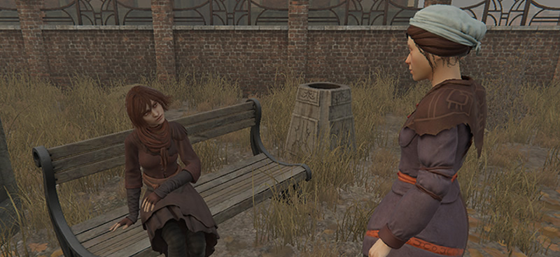

Bem-vindo ao nosso guia de podinzins, aqui você encontrara todas as formas possíveis de conseguir esse raro item!
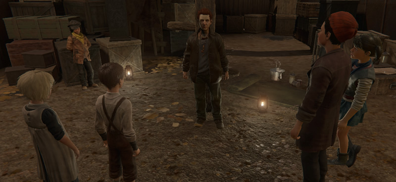

Poucas são as pessoas que tem esse raro item para troca, veja abaixo da imagem quem são.

A forma mais conhecida e também mais acessível é trocando com a famosa "menina dos podinzins", essa garota tem uma chance de aparecer junto com as outras crianças e tem interesse nos itens listados abaixo.
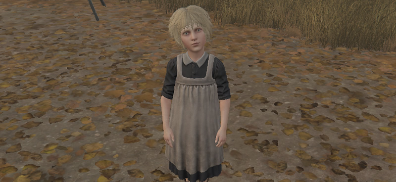
Personagem |
Tem interesse em: |
Pode ter: |
||||||||||||||||||||||||||||||||||||||||||||||||||||||
|---|---|---|---|---|---|---|---|---|---|---|---|---|---|---|---|---|---|---|---|---|---|---|---|---|---|---|---|---|---|---|---|---|---|---|---|---|---|---|---|---|---|---|---|---|---|---|---|---|---|---|---|---|---|---|---|---|

|
|
|
||||||||||||||||||||||||||||||||||||||||||||||||||||||
Tem interesse em: |
||||||||||||||||||||||||||||||||||||||||||||||||||||||||
|
||||||||||||||||||||||||||||||||||||||||||||||||||||||||
- Abaixo marquei no mapa locais que um grande número de crianças costuma aparecer (incluindo essa menina).
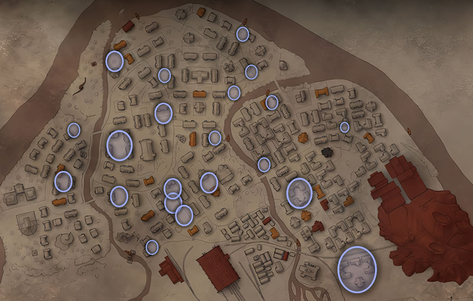
DICA: Mantenha um estoque dos itens que essa menina tem interesse e carregue-os sempre consigo quando for trocar com crianças, pois além da garota raramente ter podinzin para troca, devido ao preço extremamente alto dele você pode acabar não tendo como pagar quando ela te-lo!
Toda noite (com exceção do dia 6) esse mercador tem uma chance de ter algum podinzin para troca, o que nos dá mais um motivo para visita-lo regularmente. Veja abaixo todos os itens que ele tem interesse junto com sua localização em cada uma das noites.

Personagem |
Tem interesse em: |
Pode ter: |
|||||||||||||||||||||||||||||||||||||||||||||||||||||||||||||||
|---|---|---|---|---|---|---|---|---|---|---|---|---|---|---|---|---|---|---|---|---|---|---|---|---|---|---|---|---|---|---|---|---|---|---|---|---|---|---|---|---|---|---|---|---|---|---|---|---|---|---|---|---|---|---|---|---|---|---|---|---|---|---|---|---|---|

|
|
|
|||||||||||||||||||||||||||||||||||||||||||||||||||||||||||||||
Tem interesse em: |
|||||||||||||||||||||||||||||||||||||||||||||||||||||||||||||||||
|
|||||||||||||||||||||||||||||||||||||||||||||||||||||||||||||||||
- Abaixo marquei no mapa onde esse mercador aparece em cada uma das noites.
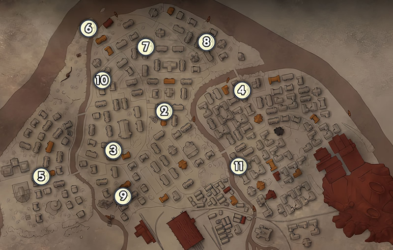
DICA #1: Esse mercador aparece no mapa somente as 00:00 de cada noite e desaparece as 07:30 da manhã, sua localização varia dependendo do número do dia.
DICA #2: Procure guardar um estoque de itens que ele tem interesse e visite-o todas as noites, acredite, vale a pena!

Esses baús pertencem às crianças do grupo dos Alma-e-Meia e estão escondidos por toda a cidade, ao abri-los você encontrará alguns itens diversos, dentre esses itens existe uma baixa chance de um ser um podinzin. Todos as dias as 07:30 da manhã novos itens podem ser encontrados nesses baús.
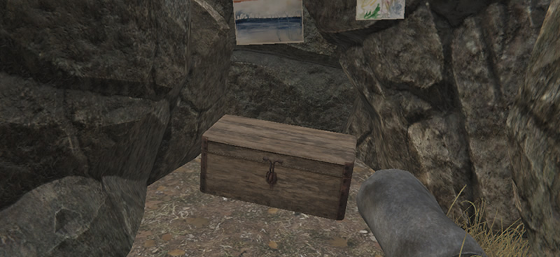
- Veja abaixo todos os locais que esses baús estão escondidos.
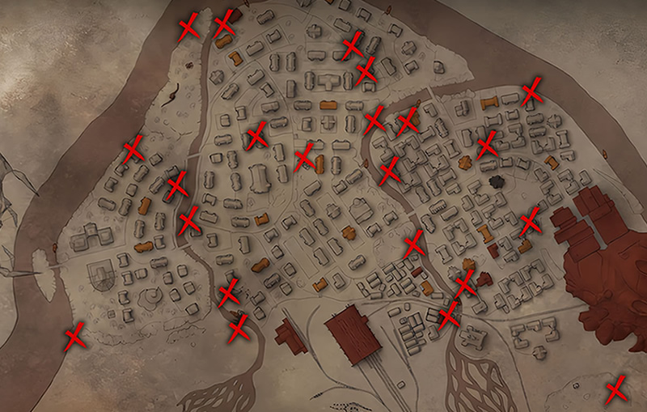
DICA #1: Caso você beba uma Twyrine (aquelas bebidas com garrafa de cor verde) será marcado no seu mapa algum evento relevante OU um baú das crianças com uma chance um pouco maior de conter um podinzin (cerca de 20%) além de outros itens úteis.
DICA #2: Como a chance de encontrar um podinzin dessa forma é extremamente baixa, não recomendo dedicar tempo para fazer somente isso, porem, caso exista algum baú no caminho do lugar que você precise ir, um pequeno desvio não fará mal a ninguém.

Outra forma de conseguir podinzins é através de certos eventos, eles só estão disponíveis em dias específicos e exigem que você os complete de uma determinada forma para garantir suas recompensas.
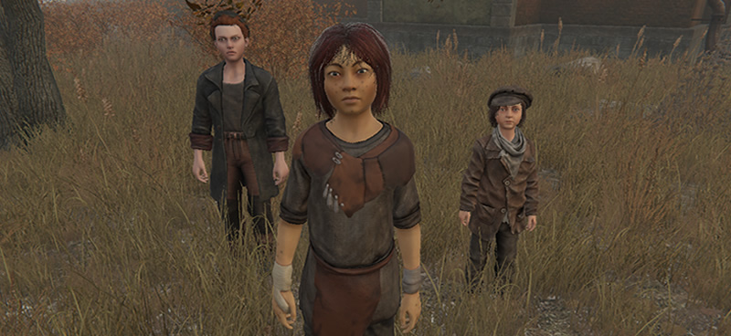
- Veja abaixo quais são esses eventos e em que dias acontecem.
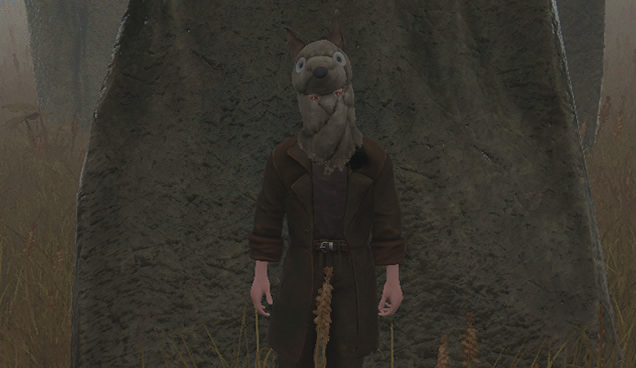
Esse evento é separado em duas partes, a primeira acontece no dia 1, logo após começar o jogo siga para a casa de Rubin e converse com o homem que estiver lá, depois vá para a fortaleza dos alma-e-meia e fale com Notkin (líder do grupo), demonstre querer ajudar no julgamento, assim que o dialogo acabar fale com ele mais uma vez e diga que você irá conversar com Lajka pessoalmente, Notkin então lhe dará uma coleira, depois disso, finalizar essa parte do evento é opcional, o importante é ter a coleira consigo no final e guardá-la até o dia 4. A segunda parte do evento fica disponível a partir do dia 4 as 07:30 da manhã, tudo que você precisa fazer é levar a coleira até uma casa chamada de "Casca de Noz", lá converse com uma garota fantasiada de cachorro e faça a troca pelo podinzin!
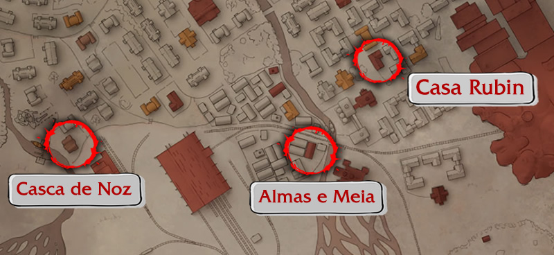
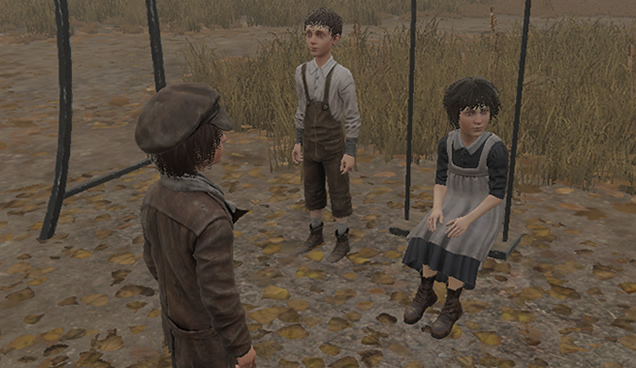
Já esse evento acontece durante a manhã/tarde do dia 2 em um parquinho perto do teatro, tudo que você precisa para completá-lo é 3x Nozes de qualquer tipo (não precisam ser iguais), ao chegar nesse lugar procure por 1 menina sentada em um balanço cercada por outros 2 meninos, fale com ela e demonstre interesse no "Pozinzin" que ela menciona, depois aceite brincar de esconde-esconde com eles, após o fim do diálogo se dirija até uma parede próxima ao local e olhe fixamente para ela durante 5 segundos, se tudo der certo as 3 crianças irão se esconder e você deve encontrá-las, todas elas podem ser encontradas nas redondezas do parquinho, atrás de lixeiras, nos cantos das casas e até em meio a vegetação, sempre que você achar uma criança será possível fazer uma troca com ela, todas as 3 terão Nozes para negociar com o valor de 1, e trocarão por outras Nozes pelas quais pagam 2, já a menina além das Nozes também terá um Pondinzin pelo valor de 6.
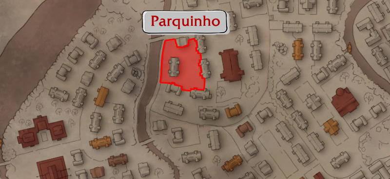
ATENÇÃO: Sempre que encontrar uma criança faça logo a troca com ela, se deixar para depois pode ser que ela desapareça!
DICA #1: Tire proveito desse evento trocando 1 Noz por 2, deixando todas as crianças com somente 1 Noz em seu inventário.
DICA #2: Se as crianças não se esconderem de jeito nenhum o jogo pode ter bugado, neste caso reabra o jogo e tente novamente.